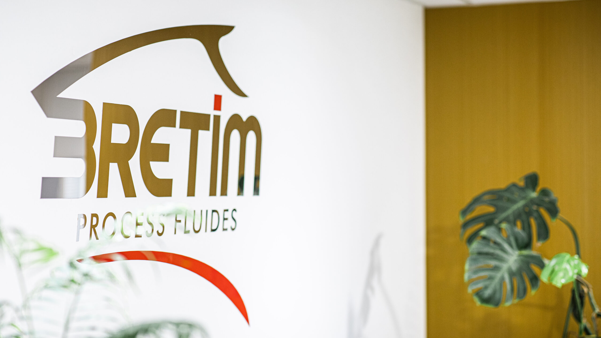

Informations du Projet
- Technologies : WinDev
- Période : 2023–2025
- Environnement : ERP interne, Windows, réseau local
- Entreprise : Bretim
Dans le cadre de mon alternance, j’ai participé au développement et à la maintenance de l’ERP interne de l’entreprise. Ce logiciel centralise la gestion des tickets,le CRM, le suivi du personnel et la gestion des stocks. Le projet est réalisé sous WinDev .
Voici les trois fonctionnalités majeures que j’ai développées ou refondues :

Pour améliorer le suivi et la gestion des demandes internes, j’ai développé un gestionnaire de tickets intégré à l’ERP. Il permet aux utilisateurs de :
L’outil centralise les échanges et assure une traçabilité claire tout en facilitant la priorisation des tâches.

J’ai mis en place un module de type agenda pour permettre aux employés d’enregistrer facilement leurs heures de travail. Chaque enregistrement peut être associé à :
Ce système permet de générer des statistiques précises sur le temps passé par tâche, client ou affaire, facilitant ainsi le pilotage des activités. L’outil est simple à utiliser et améliore la productivité du pointage.
vec plus de 20 000 produits enregistrés, la recherche existante dans la base de données était lente et manquait de fiabilité. Cela conduisait régulièrement à des doublons ou à des erreurs de sélection dans les opérations commerciales. J’ai développé un nouveau système de recherche avancée avec :
Grâce à cette refonte, les utilisateurs peuvent désormais trouver un produit en quelques secondes, ce qui améliore considérablement le processus de vente et de devis.